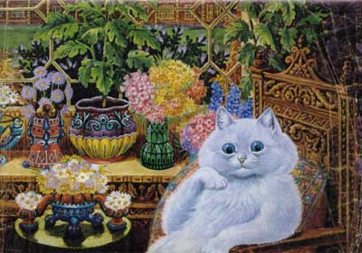
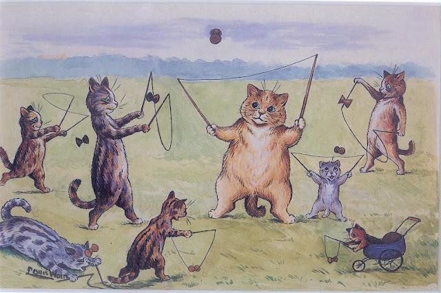

Un estilo que transformó la forma de ver a los gatos
Antes de Louis Wain, los gatos eran vistos como animales utilitarios o incluso misteriosos. Su arte los transformó en compañeros entrañables y protagonistas de la vida moderna. Sus ilustraciones los mostraban leyendo, tomando el té o tocando música, comportándose como humanos, con gestos expresivos y llenos de humor.
Gracias a sus obras, los gatos se convirtieron en una moda en la Inglaterra victoriana y, por primera vez, se popularizó su tenencia como mascotas domésticas. Las imágenes de Wain aparecían en calendarios, postales, tazas y revistas, difundiendo una nueva visión más tierna y cercana de estos animales.

Innovación visual y color
Wain introdujo un estilo inconfundible: contornos dinámicos, ojos grandes y brillantes, y una paleta de colores intensos. Su trazo combinaba precisión con una energía casi eléctrica, anticipando el arte psicodélico del siglo XX.
Con el tiempo, su arte se volvió más abstracto, incorporando patrones geométricos, mandalas y figuras fractales que reflejaban una evolución emocional y creativa profunda. Cada etapa de su trabajo mostró una búsqueda constante por representar la alegría, el movimiento y la vitalidad de los gatos.
Características del estilo Wain
- Uso expresivo del color y la textura.
- Rostros felinos con emociones humanas.
- Composiciones llenas de energía y humor.
- Escenas cotidianas reinterpretadas con ironía y ternura.
- Influencias del arte decorativo y el simbolismo.

Impacto cultural
El arte de Louis Wain redefinió la relación entre las personas y los animales. Su influencia trascendió la ilustración: inspiró diseñadores, caricaturistas y artistas contemporáneos. Incluso hoy, su estilo puede reconocerse en cómics, animaciones y cultura pop.
